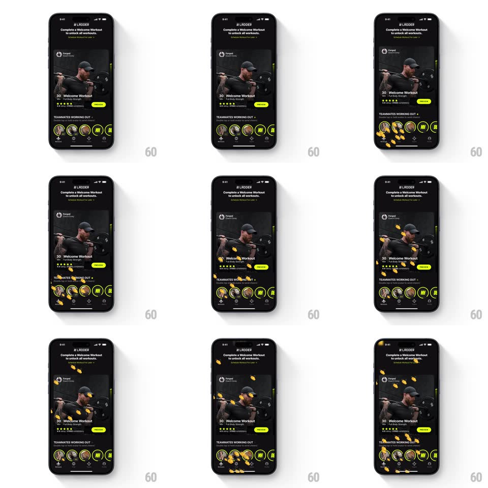

Media
Frame-by-frame

Rebuild this interaction 1:1: Ladder's send-cheers - tapping a teammate's avatar in "TEAMMATES WORKING OUT" erupts a burst of yellow clapping-hand emojis from that avatar that float upward across the workout card, scaling and rotating as they scatter and fade.

Rebuild this interaction 1:1: Ladder's send-cheers - tapping a teammate's avatar in "TEAMMATES WORKING OUT" erupts a burst of yellow clapping-hand emojis from that avatar that float upward across the workout card, scaling and rotating as they scatter and fade. ## Integration Integration: stack-agnostic spec - springs given as stiffness/damping, timed motions as duration + curve; map every value to your framework and animation library of choice. ## Scene Dark app: "Complete a Welcome Workout to unlock all workouts" banner, a workout card (coach photo, "30' Welcome Workout", intensity dots, START pill), and the teammates row - circular avatars, some with initials, ringed in volt. ## Motion spec Pattern: emoji fountain from an avatar. - Tap an avatar: it pulses (scale 1 -> 0.88 -> 1, spring ~500/20) and immediately emits 8-12 clap-hand emojis from its center. - Each emoji: launches with a random upward velocity and slight horizontal spread, scales 0.4 -> 1 -> 0.8 while rotating (±25deg), drifts up ~200-350px over 900-1400ms, and fades out in its last third. - Emojis layer OVER the workout card and banner (full-screen overlay, no clipping). - Rapid taps stack bursts - the avatar re-pulses per tap and each burst is independent. - A faint haptic fires per burst. ## Calibration - Emojis are identical (yellow clap hands) - variety comes from scale/rotation/timing, not different glyphs. - Spawn point is exactly the tapped avatar's center, even mid-row. ## Reduced motion A single clap emoji rises from the avatar and fades. ## Don't miss - The burst ignores the card layout - emojis travel over photos and text freely. - The avatar ring flashes volt on tap as the burst spawns.